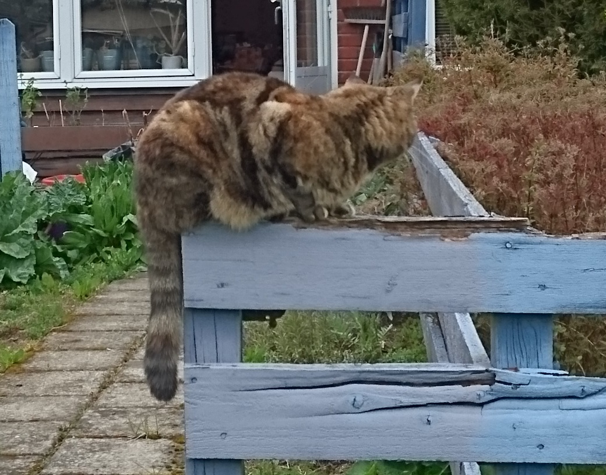
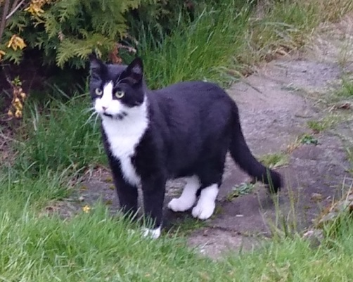

Personal
Ida-Sofie Karlsson
Since I have an unusual name, the .com domain was free! So, I have my own website.
I’m not proud of the current state of it, I’m still using One’s website builder and that was not the
plan when I started learning HTML and CSS. But improvements will come…
I am a reasonably middle-aged "aunt", who lives in a rented flat with a garden, two cats and an insane amount of yarn.
I enjoy different forms of crafts; it's a relaxing contrast to desk and computer work. I also read a lot, I frequent
the library often and delve into MÖP literature, prepping, board work, intelligence activities, Sami literature, police
detective stories from Finnish Norrbotten, etc. I am always interested in learning something new; my mind needs
constant growth.
I ventured into the administrative path, after also having worked as a newspaper delivery woman, and a postman
(postwoman) in Denmark before I got a job as executive assistant at Lytics Health, a small AI-startup. It was there I got my first contact with coding. I stayed
for five years in the startup world in Malmö, and I love innovation and new technology.
I started to feel that I want to do something more than just administration for the next 20 years, which led to that,
when I became unemployed in 2020, I started looking around for IT opportunities. Administration doesn't provide very good
job prospects. The IT sector will offer significantly more and better opportunities. Programming and web development is
fun, and I am now studying web development in my spare time.
My plan is to start with frontend, mainly because it is the easiest path to learn, and judged easy to get into as a
junior programmer. I like working with different types of software. The long-term goal is, to put it briefly and perhaps
boringly, but to first get a foothold in some direction and develop accordingly. The absolute dream is to be a "real"
programmer, i.e. to work with C# and python, instead of Word and PowerPoint as now.
About the Cats
Bonnies is my first cat; she’s been with me since kittenhood and is 16 years old now. Her life was nice and comfortable
until Knappen came along.

Knappen is a re-location. He lived with my sister in Åkarp and she finally convinced me to
take over him, in 2017. Something about massive ticks falling of him, on their floor… I haven’t had that problem.
He is an obnoxious foul beast, that should not be allowed in civilized surroundings, according to Bonnie.
She isn’t that fond of him. The last year, however, she has grown to accept him. Either hell finally froze over or
she has dementia and has forgotten that she hates him.
